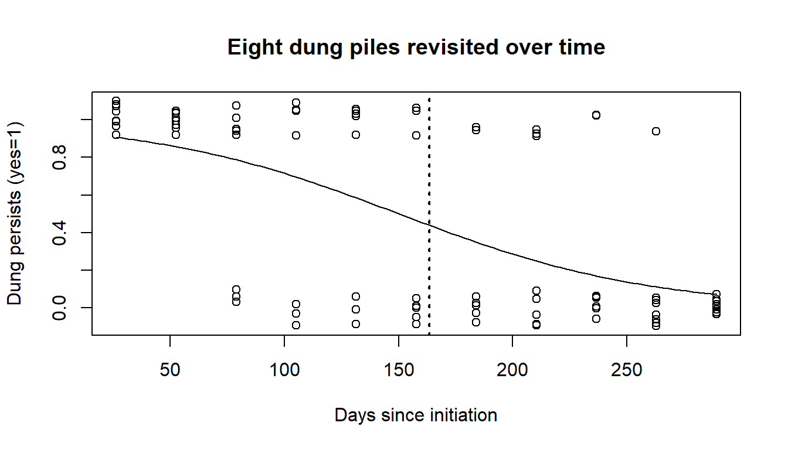
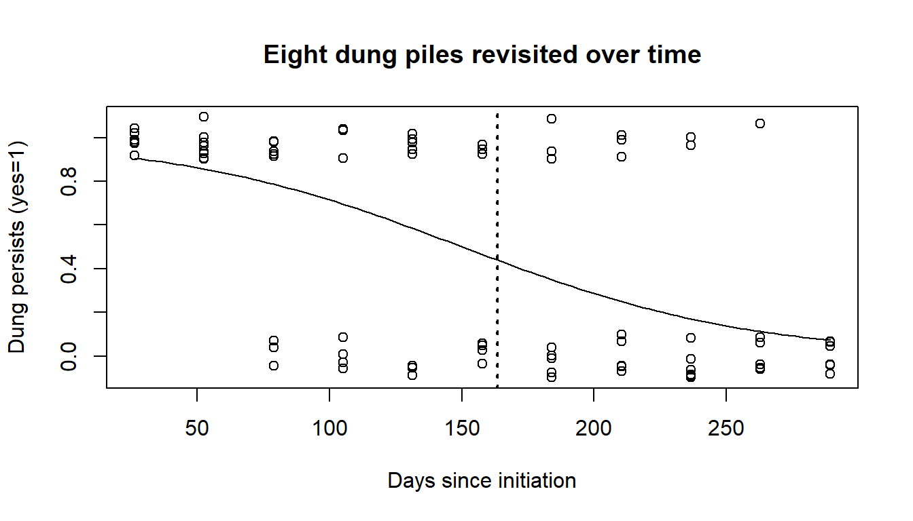
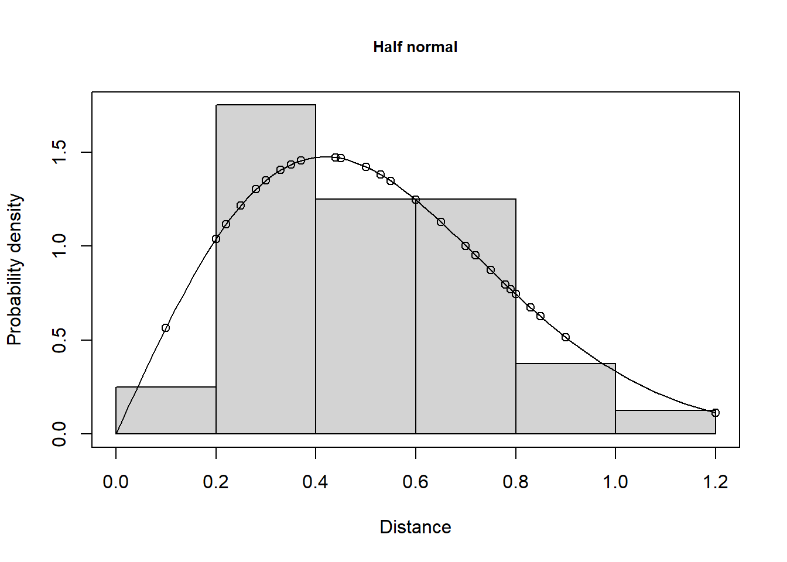
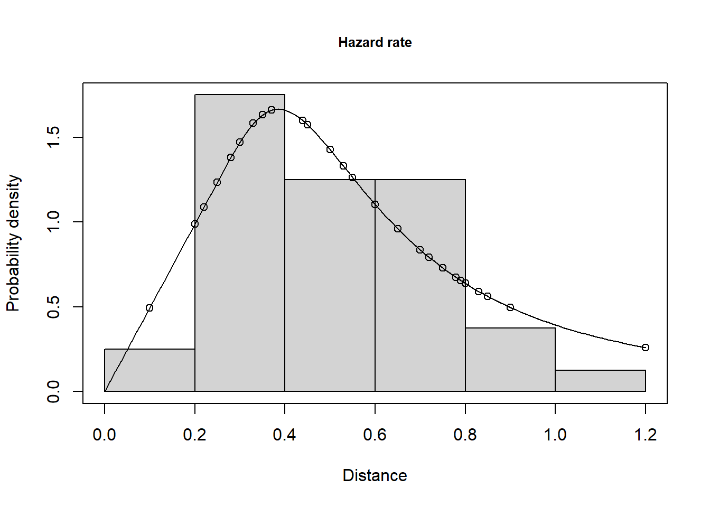
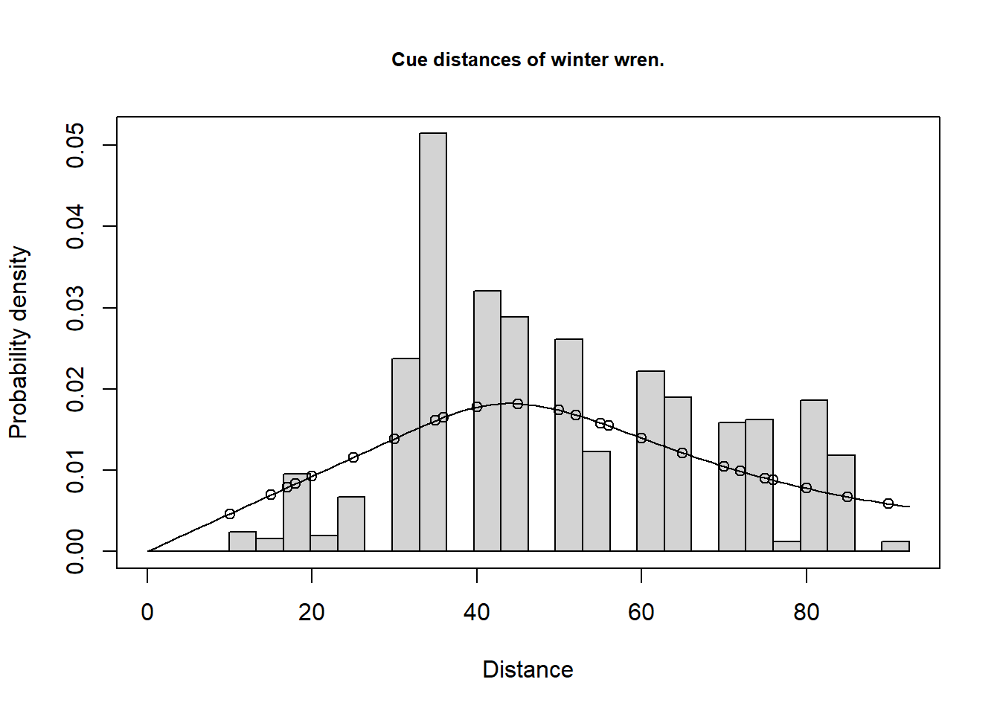
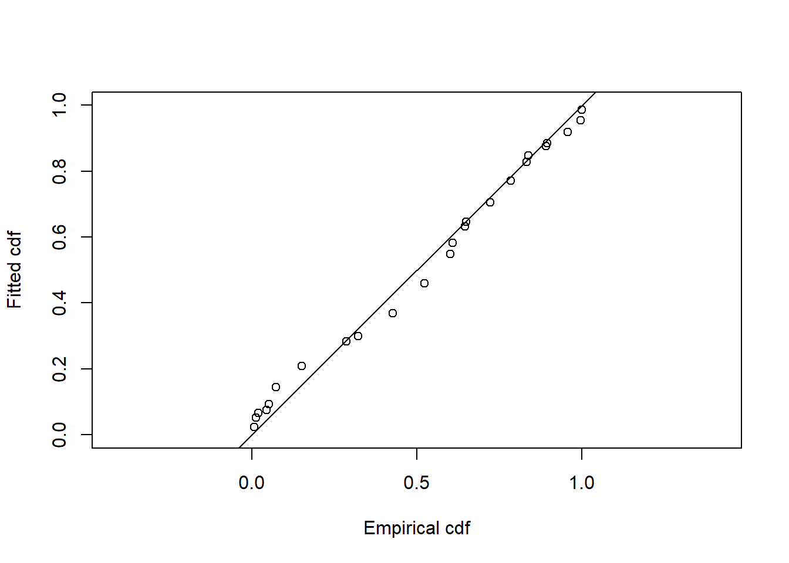

library(Distance)
data(sikadeer)
conversion.factor <- convert_units("centimeter", "kilometer", "square kilometer")Analysis with multipliers solution
Solution
Analysis with multipliers
Dung survey of deer
Returning to the data described in (Marques et al., 2001), the following code loads the relevant packages and data. The perpendicular distances are measured in centimetres, effort along the transects measured in kilometres and areas in square kilometres.
Here we did not perform a comprehensive examination of fitting a detection function to the detected pellet groups, however, as a general guideline, we truncated the longest 10% perpendicular distances.
deer.df <- ds(sikadeer, key="hn", truncation="10%", convert_units = conversion.factor)
plot(deer.df)
print(deer.df$dht$individuals$summary) Region Area CoveredArea Effort n k ER se.ER cv.ER
1 A 13.9 0.005950 1.70 1217 13 715.88234 119.918872 0.1675120
2 B 10.3 0.003850 1.10 396 10 359.99999 86.859289 0.2412758
3 C 8.6 0.001575 0.45 17 3 37.77778 8.521202 0.2255612
4 E 8.0 0.002975 0.85 30 5 35.29412 16.568939 0.4694533
5 F 14.0 0.000700 0.20 29 1 145.00000 0.000000 0.0000000
6 G 15.2 0.001400 0.40 32 3 80.00000 39.686269 0.4960784
7 H 11.3 0.000700 0.20 3 1 15.00000 0.000000 0.0000000
8 J 9.6 0.000350 0.10 7 1 70.00000 0.000000 0.0000000
9 Total 90.9 0.017500 5.00 1731 37 201.90876 0.000000 0.0000000The summary above shows that in blocks F, H and J there was only one transect and, as a consequence, it is not possible to calculate a variance empirically for the encounter rate in those blocks.
Estimating decay rate from data
A paper by Laing et al. (2003) describes field protocol for collecting data to estimate the mean persistence time of dung or nests to be used as multipliers. The code segment shown earlier analyses a file of such data via logistic regression to produce an estimate of mean persistence time and its associated uncertainty.

Mean persistence time SE %CV
163.396748 14.226998 8.707026 Using the output from calling the MIKE.persistence function, the multipliers can be specified:
# Create list of multipliers
mult <- list(creation = data.frame(rate=25, SE=0),
decay = data.frame(rate=163, SE=14))
print(mult)$creation
rate SE
1 25 0
$decay
rate SE
1 163 14deer_ests <- dht2(deer.df, flatfile=sikadeer, strat_formula=~Region.Label,
convert_units=conversion.factor, multipliers=mult,
stratification="effort_sum", total_area = 100)
print(deer_ests, report="abundance")Abundance estimates from distance sampling
Stratification : effort_sum
Variance : R2, n/L
Multipliers : creation, decay
Sample fraction : 1
Summary statistics:
Region.Label Area CoveredArea Effort n k ER se.ER cv.ER
A 13.9 0.005950 1.70 1217 13 715.882 119.919 0.168
B 10.3 0.003850 1.10 396 10 360.000 86.859 0.241
C 8.6 0.001575 0.45 17 3 37.778 8.521 0.226
E 8.0 0.002975 0.85 30 5 35.294 16.569 0.469
F 14.0 0.000700 0.20 29 1 145.000 0.000 0.000
G 15.2 0.001400 0.40 32 3 80.000 39.686 0.496
H 11.3 0.000700 0.20 3 1 15.000 0.000 0.000
J 9.6 0.000350 0.10 7 1 70.000 0.000 0.000
Total 100.0 0.017500 5.00 1731 37 346.200 45.234 0.131
Abundance estimates:
Region.Label Estimate se cv LCI UCI df
A 1027 197.474 0.192 691 1527 20.797
B 383 99.171 0.259 220 667 11.955
C 34 8.200 0.244 15 75 2.759
E 29 13.959 0.479 9 99 4.329
F 210 19.752 0.094 174 252 60314.199
G 126 63.399 0.505 18 858 2.147
H 18 1.649 0.094 15 21 60314.199
J 69 6.539 0.094 58 83 60314.199
Total 3575 575.860 0.161 2560 4990 20.215
Component percentages of variance:
Region.Label Detection ER Multipliers
A 4.07 75.96 19.97
B 2.24 86.76 10.99
C 2.52 85.14 12.34
E 0.66 96.13 3.22
F 16.93 0.00 83.07
G 0.59 96.52 2.89
H 16.93 0.00 83.07
J 16.93 0.00 83.07
Total 8.09 91.91 0.00There are a few things to notice:
- overall estimate of density
- most effort took place in woodland A where deer density was high. Therefore, the overall estimate is between the estimated density in woodland A and the lower densities in the other woodlands.
- components of variance
- we now have uncertainty associated with the encounter rate, detection function and decay rate (note there was no uncertainty associated with the production rate) and so the components of variation for all three components are provided.
In woodland A, there were 13 transects on which over 1,200 pellet groups were detected: uncertainty in the estimated density was 19% and the variance components were apportioned as detection probability 4%, encounter rate 76% and multipliers 20%.
In woodland E, there were 5 transects and 30 pellet groups resulting in a coefficient of variation (CV) of 48%: the variance components were apportioned as detection probability 0.7%, encounter rate 96% and multipliers 3%.
In woodland F only a single transect was placed and the CV of density of 9% was apportioned as detection probability 17% and multipliers 83%. Do you trust this assessment of uncertainty in the density of deer in this woodland? We are missing a component of variation because we were negligent in placing only a single transect in this woodland and so are left to ‘assume’ there is no variability in encounter rate in this woodland.
By the same token, we are left to assume there is no variability in production rates between deer because we have not included a measure of uncertainty in this facet of our analysis.
Cue counting survey of whales
data(CueCountingExample)
head(CueCountingExample, n=3) Region.Label Area Sample.Label Cue.rate Cue.rate.SE Cue.rate.df object distance
1 B 85000 2.18 25 5 1 NA NA
2 B 85000 2.19 25 5 1 NA NA
3 B 85000 2.20 25 5 1 NA NA
Sample.Fraction Sample.Fraction.SE Search.time bss sp size Study.Area
1 0.5 0 0.1333333 NA <NA> NA whales
2 0.5 0 0.1000000 NA <NA> NA whales
3 0.5 0 0.4333333 NA <NA> NA whalesCueCountingExample$Effort <- CueCountingExample$Search.time
cuerates <- CueCountingExample[ ,c("Cue.rate", "Cue.rate.SE", "Cue.rate.df")]
cuerates <- unique(cuerates)
names(cuerates) <- c("rate", "SE", "df")
mult <- list(creation=cuerates)
print(mult)$creation
rate SE df
1 25 5 1The estimated cue rate, \(\hat \nu\), is 25 cues per unit time (per hour in this case). Its standard error is 5, therefore the CV of cue rate is \(5/25 = 0.2\) (20%).
# Tidy up data by removing surplus columns
CueCountingExample[ ,c("Cue.rate", "Cue.rate.SE", "Cue.rate.df", "Sample.Fraction",
"Sample.Fraction.SE")] <- list(NULL)
trunc <- 1.2
whale.df.hn <- ds(CueCountingExample, key="hn", transect="point", adjustment=NULL,
truncation=trunc)
whale.df.hr <- ds(CueCountingExample, key="hr", transect="point", adjustment=NULL,
truncation=trunc)
knitr::kable(summarize_ds_models(whale.df.hn, whale.df.hr), digits = 3)| Model | Key function | Formula | C-vM p-value | \(\hat{P_a}\) | se(\(\hat{P_a}\)) | \(\Delta\)AIC |
|---|---|---|---|---|---|---|
| Half-normal | ~1 | 0.810 | 0.239 | 0.043 | 0.00 | |
| Hazard-rate | ~1 | 0.747 | 0.281 | 0.065 | 3.07 |
Half the circle (point transect) was searched and so the sampling fraction \(\phi /2\pi = 0.5\). Therefore, \(\phi = \pi\) (\(\phi\) must be in radians).
The following commands obtain density estimates assuming no stratification (strat_formula=~1).
whale.est.hn <- dht2(whale.df.hn, flatfile=CueCountingExample, strat_formula=~1,
multipliers=mult, sample_fraction=0.5)
print(whale.est.hn, report="abundance")Abundance estimates from distance sampling
Stratification : geographical
Variance : P2, n/L
Multipliers : creation
Sample fraction : 0.5
Summary statistics:
.Label Area CoveredArea Effort n k ER se.ER cv.ER
Total 168000 82.4932 36.47 40 92 1.097 0.303 0.276
Abundance estimates:
.Label Estimate se cv LCI UCI df
Total 13654 5263.071 0.385 6112 30500 13.058
Component percentages of variance:
.Label Detection ER Multipliers
Total 21.7 51.38 26.92whale.est.hr <- dht2(whale.df.hr, flatfile=CueCountingExample, strat_formula=~1,
multipliers=mult, sample_fraction=0.5)
print(whale.est.hr, report="abundance")Abundance estimates from distance sampling
Stratification : geographical
Variance : P2, n/L
Multipliers : creation
Sample fraction : 0.5
Summary statistics:
.Label Area CoveredArea Effort n k ER se.ER cv.ER
Total 168000 82.4932 36.47 40 92 1.097 0.303 0.276
Abundance estimates:
.Label Estimate se cv LCI UCI df
Total 11590 4777.034 0.412 5017 26774 16.593
Component percentages of variance:
.Label Detection ER Multipliers
Total 31.52 44.93 23.54A half normal detection function was chosen and whale abundance was estimated to be 13,654 whales with a 95% confidence interval (6,112: 30,500).
Note the large difference between the half normal estimate and the estimate from the hazard rate model, which is 11,590 whales, with 95% confidence interval (5,017; 26773). Remember that the key parameter in a cue counting analysis is \(h(0)\), the slope of the fitted pdf to the observed data at distance zero. The difference between the estimates for the different key function is the difference between these slopes for the two models (Fig. 2):
plot(whale.df.hn, pdf=TRUE, main="Half normal")
plot(whale.df.hr, pdf=TRUE, main="Hazard rate")

Cue counting estimates of detection probability are more volatile than those from line transect surveys, because on a cue counting survey you have few data where you need it most to estimate \(h(0)\) - namely at distances close to zero. As a consequence, cue-counting surveys require higher cue sample size for reliable estimation than samples of animals for line transect surveys.
Don’t worry too much about the apparent lack of fit in the first interval, or two, in Figure 2 - remember the sample size is very small in these intervals. Use the plot above and the goodness-of-fit statistics to guide you about the fit of your model.
Cue counting survey of songbirds (optional)
Analysis of the cue count data of winter wrens described by Buckland (2006).
data(wren_cuecount)
cuerate <- unique(wren_cuecount[ , c("Cue.rate","Cue.rate.SE")])
names(cuerate) <- c("rate", "SE")
mult <- list(creation=cuerate)
print(mult)$creation
rate SE
1 1.4558 0.2428# Search time is the effort - this is 2 * 5min visits
wren_cuecount$Effort <- wren_cuecount$Search.time
w3.hr <- ds(wren_cuecount, transect="point", key="hr", adjustment=NULL, truncation=92.5)The sampling fraction for these data will be 1 because the full circle around the observer was searched.
conversion.factor <- convert_units("meter", NULL, "hectare")
w3.est <- dht2(w3.hr, flatfile=wren_cuecount, strat_formula=~1,
multipliers=mult, convert_units=conversion.factor)
# NB "Effort" here is sum(Search.time) in minutes
# NB "CoveredArea" here is pi * w^2 * sum(Search.time)
print(w3.est, report="density")Density estimates from distance sampling
Stratification : geographical
Variance : P2, n/L
Multipliers : creation
Sample fraction : 1
Summary statistics:
.Label Area CoveredArea Effort n k ER se.ER cv.ER
Total 33.2 860.1681 320 765 32 2.391 0.236 0.099
Density estimates:
.Label Estimate se cv LCI UCI df
Total 1.2092 0.242 0.2 0.8195 1.7843 522.541
Component percentages of variance:
.Label Detection ER Multipliers
Total 6.14 24.33 69.54Note the large proportion of the uncertainty in winter wren density stems from variability in cue (song) rate. Analyses of the cue count data are necessarily rather subjective as the data show substantial over-dispersion (a single bird may give many song bursts all from the same location during a five minute count). In this circumstance, goodness-of-fit tests are misleading and care must be taken not to over-fit the data (i.e. fit a complicated detection function).
plot(w3.hr, pdf=TRUE, main="Cue distances of winter wren.")
gof_ds(w3.hr)

Goodness of fit results for ddf object
Distance sampling Cramer-von Mises test (unweighted)
Test statistic = 1.70062 p-value = 6.04794e-05References
Buckland, S. T. (2006). Point-transect surveys for songbirds: Robust methodologies. The Auk, 123(2), 345–357. https://doi.org/10.1642/0004-8038(2006)123[345:PSFSRM]2.0.CO;2
Laing, S. E., Buckland, S. T., Burn, R. W., Lambie, D., & Amphlett, A. (2003). Dung and nest surveys: Estimating decay rate. Journal of Applied Ecology, 40, 1102–1111. https://doi.org/10.1111/j.1365-2664.2003.00861.x
Marques, F. F. C., Buckland, S. T., Goffin, D., Dixon, C. E., Borchers, D. L., Mayle, B. A., & Peace, A. J. (2001). Estimating deer abundance from line transect surveys of dung: sika deer in southern Scotland. Journal of Applied Ecology, 38(2), 349–363. https://doi.org/10.1046/j.1365-2664.2001.00584.x